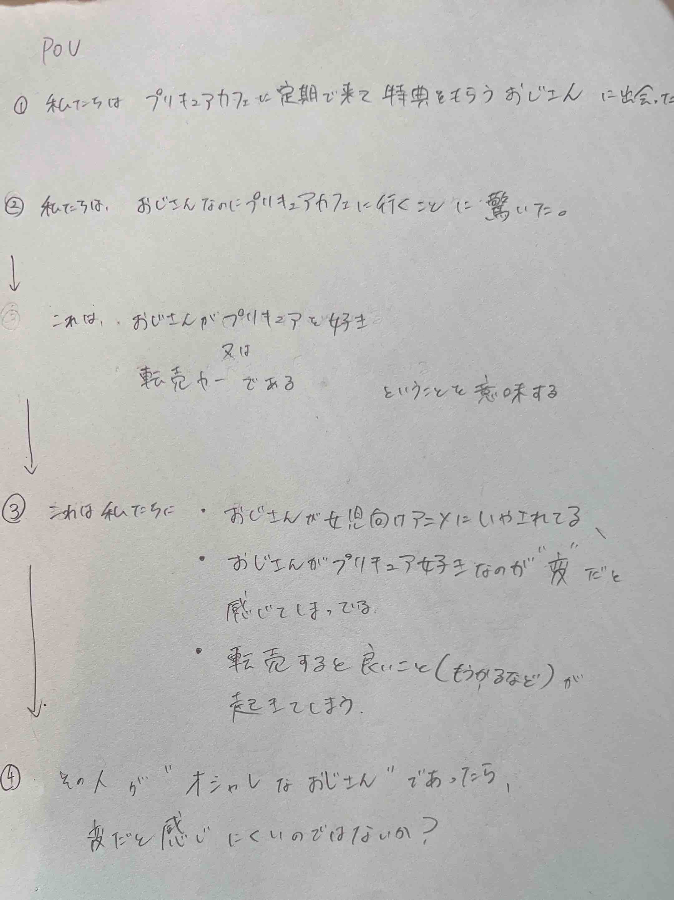
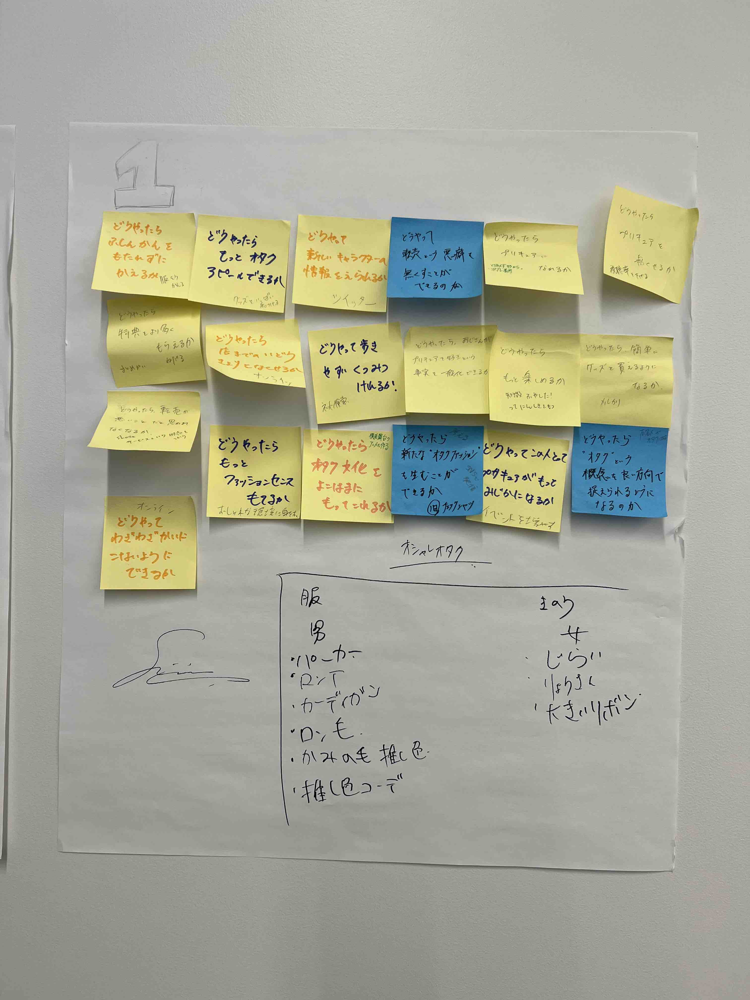
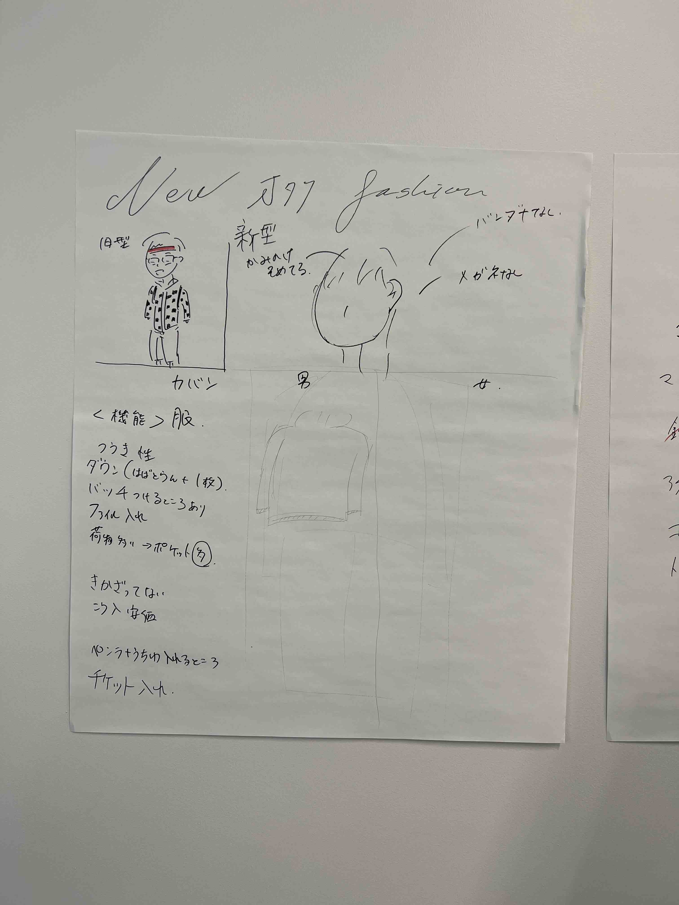
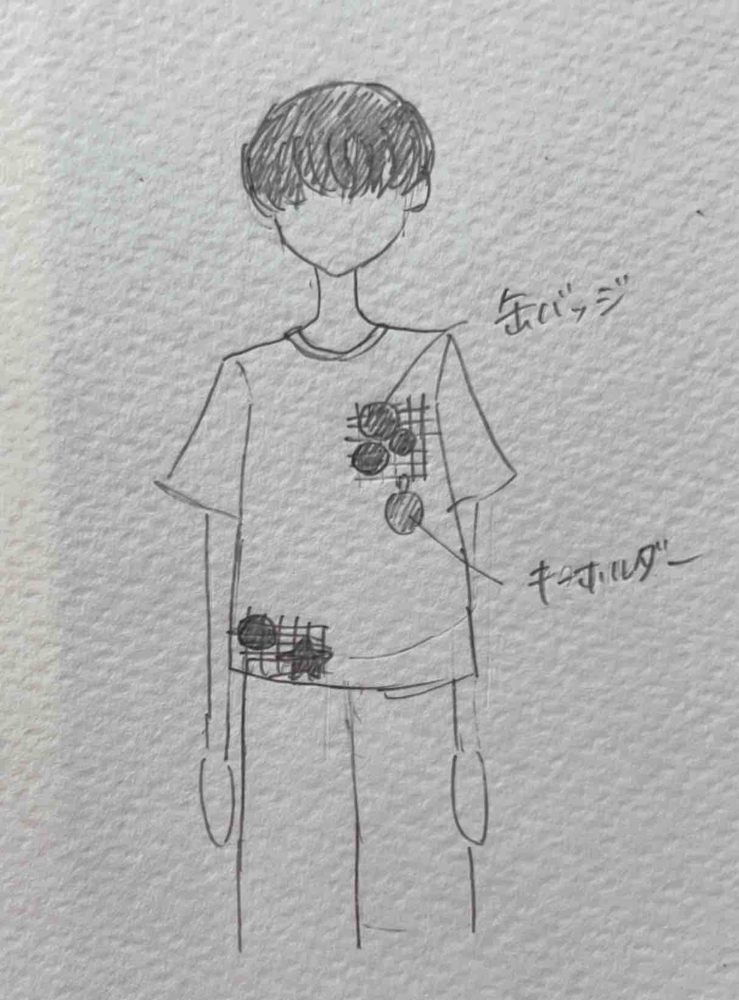

design for others
オタクのための服
私たちは、「プリキュアのカフェに定期的に通うおじさん」に焦点を当て、point of viewを行いました。

その結果、おしゃれでオタ活しやすいファッションを生み出すことになり、様々なアイデアを考えました。
 
今回は、缶バッジやキーホルダーがつけられるアミアミを作成した。

完成！！
実際に作ってみたところ、思っていたよりも固かった。そのため、洋服に付けるには少し浮いてしまった。又、穴の広さを調節できるように工夫したいと思う。
 実際に作ってみたところ、思っていたよりも固かった。そのため、洋服に付けるには少し浮いてしまった。又、穴の広さを調節できるように工夫したいと思う。
実際に作ってみたところ、思っていたよりも固かった。そのため、洋服に付けるには少し浮いてしまった。又、穴の広さを調節できるように工夫したいと思う。
実際に作ってみたところ、思っていたよりも固かった。そのため、洋服に付けるには少し浮いてしまった。又、穴の広さを調節できるように工夫したいと思う。
実際に作ってみたところ、思っていたよりも固かった。そのため、洋服に付けるには少し浮いてしまった。又、穴の広さを調節できるように工夫したいと思う。